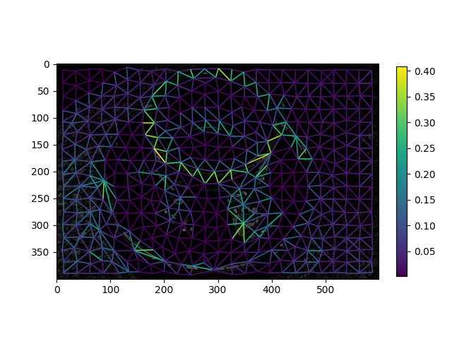

This example demonstrates construction of region boundary based RAGs with the rag_boundary function.
from skimage.future import graph
from skimage import data, segmentation, color, filters, io
from matplotlib import pyplot as plt
img = data.coffee()
gimg = color.rgb2gray(img)
labels = segmentation.slic(img, compactness=30, n_segments=400)
edges = filters.sobel(gimg)
edges_rgb = color.gray2rgb(edges)
g = graph.rag_boundary(labels, edges)
lc = graph.show_rag(labels, g, edges_rgb, img_cmap=None, edge_cmap='viridis',
edge_width=1.2)
plt.colorbar(lc, fraction=0.03)
io.show()
Total running time of the script: (0 minutes 0.871 seconds)
plot_rag_boundary.pyplot_rag_boundary.ipynb Source
Source